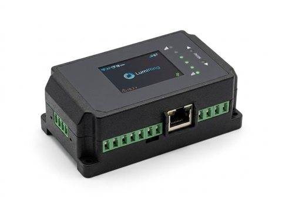

9:41
●●●● 5G 🔋
Central Unit
Connected
Home

WW-CENTRAL-7C3A1F
WW-4000 · Rev C
Add Expansion Board
System
Information
Device
Maintenance
Stored
Presets
Monitoring
Settings
Radio
Signal log
OSDP &
Wiegand
I/O &
Relays
Expansion
Boards
Power
Faults log
Radio
Data Port
I/O Ports
Expansion
Boards
Ethernet
Network
Device
Behavior